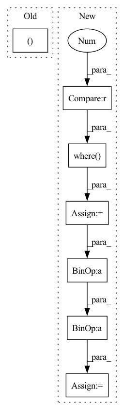

Pattern ID :31555

Before Change
time_next += self.sample_time_delay
img, x_start = self.p_sample(img, time, time_next, x_start, clip_denoised = True)
return bits_to_decimal(img)
After Change
model_mean, _, posterior_log_variance = self.q_posterior(x_start = x_start, x_t = img, t = time, t_next = time_next)
noise = torch.where(
rearrange(time_next > 0, "b -> b 1 1 1"),
torch.randn_like(img),
torch.zeros_like(img)
)
img = model_mean + (0.5 * posterior_log_variance).exp() * noise
return bits_to_decimal(img)
In pattern: SUPERPATTERN
Frequency: 3
Non-data size: 7
Instances
Fragment ID: 92233759
Project Name: lucidrains/bit-diffusion
Commit Name: 70044d12755081b62303081a44ee196b783efd1b
Time: 2022-08-17
Author: lucidrains@gmail.com
File Name: bit_diffusion/bit_diffusion.py
M Class Name: BitDiffusion
N Class Name: BitDiffusion
M Method Name: ddpm_sample(2)
N Method Name: ddpm_sample(2)
M Parent Class: nn.Module
N Parent Class: nn.Module
M File Name: bit_diffusion/bit_diffusion.py
N File Name: bit_diffusion/bit_diffusion.py
M Start Line: 508
M End Line: 518
N Start Line: 482
N End Line: 505
'>
Before Change
new_all_cmc = new_all_cmc.sum(0) / num_valid_q
mAP = np.mean(all_AP)
return new_all_cmc, mAP
def eval_regdb(distmat, q_pids, g_pids, max_rank = 20):
After Change
// compute mINP
// refernece: Deep Learning for Person Re-identification: A Survey and Outlook
pos_idx = np.where(orig_cmc == 1)
pos_max_idx = np.max(pos_idx)
inp = cmc[pos_max_idx]/ (pos_max_idx + 1.0)
all_INP.append(inp)
cmc[cmc > 1] = 1
'>
Fragment ID: 92233756
Project Name: mangye16/ddag
Commit Name: 5c40c20530b2bfa360fa8082f79e7d48114a365e
Time: 2020-08-25
Author: 303463418@qq.com
File Name: eval_metrics.py
M Class Name: AnonimousClass
N Class Name: AnonimousClass
M Method Name: eval_sysu(6)
N Method Name: eval_sysu(6)
M Parent Class:
N Parent Class:
M File Name: eval_metrics.py
N File Name: eval_metrics.py
M Start Line: 78
M End Line: 81
N Start Line: 21
N End Line: 81
'>
Before Change
all_cmc = all_cmc.sum(0) / num_valid_q
mAP = np.mean(all_AP)
return all_cmc, mAP
After Change
// compute mINP
// refernece: Deep Learning for Person Re-identification: A Survey and Outlook
pos_idx = np.where(raw_cmc == 1)
pos_max_idx = np.max(pos_idx)
inp = cmc[pos_max_idx]/ (pos_max_idx + 1.0)
all_INP.append(inp)
cmc[cmc > 1] = 1
'>
Fragment ID: 92233746
Project Name: mangye16/ddag
Commit Name: 5c40c20530b2bfa360fa8082f79e7d48114a365e
Time: 2020-08-25
Author: 303463418@qq.com
File Name: eval_metrics.py
M Class Name: AnonimousClass
N Class Name: AnonimousClass
M Method Name: eval_regdb(4)
N Method Name: eval_regdb(4)
M Parent Class:
N Parent Class:
M File Name: eval_metrics.py
N File Name: eval_metrics.py
M Start Line: 136
M End Line: 139
N Start Line: 96
N End Line: 148